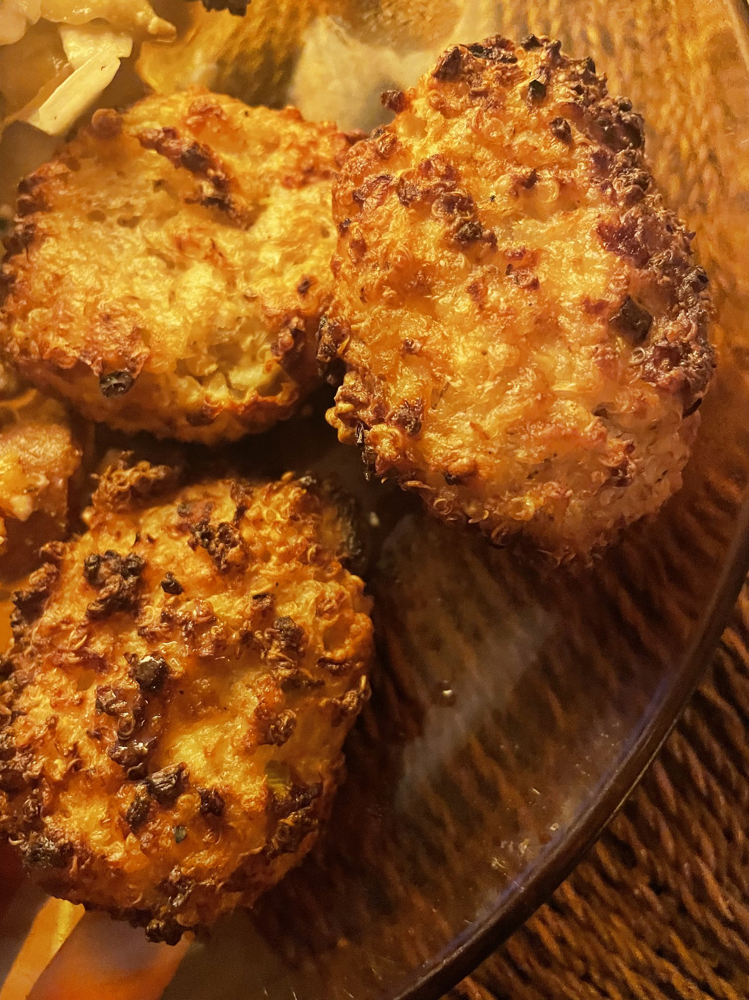

Tortitas de quinoa
Ingredients
2×
- 150 g de quinoa
- 1 huevo
- 2 cdas de queso rallado
- 2 cdas de pan rallado
- sal
- pimienta
- aceite

Preparación
Paso 1
Cocer 150 g de quinoa en el doble de agua 15min y dejar enfriar.
Paso 2
Mezclar con 1 huevo, 2 cdas de queso rallado, 2 cdas de pan rallado, sal y pimienta.
Paso 3
Formar tortitas y hornearlas 25min a 200ºC (o dorarlas en la sartén con un poco de aceite), hasta que estén crujientes.